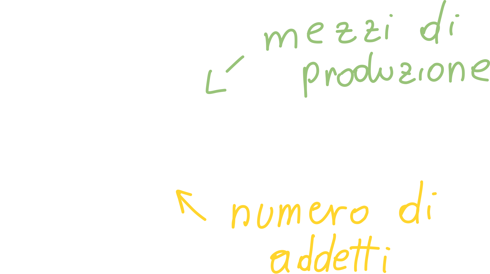

Cost Accounting
Il cost accounting è un elemento critico dell'impresa: se non venisse calcolato correttamente, potrebbe portare ad una sottostima o sovrastima dei costi di produzione; entrambi gli scenari porterebbero ad una perdita di utile.
Da pagina 33 del libro
Per poter procedere dobbiamo dare uno sguardo alle categorie di costo
Analisi dei costi di impianto e di esercizio
Costi di impianto
Sono tutti quei costi che si sostengono per la realizzazione delle infrastrutture (come acquisto del solo, oneri di progettazione, acquisto di macchinari, etc.)
Costi di esercizio
Tutti quei costi che possono essere imputati al funzionamento dell'impianto e dell'attività, compresi i costi logistici, ovvero il trasporto del prodotto dall'impianto di produzione fino ai depositi che si occupano poi della distribuzione.
Possiamo fare un esempio banale di costo di esercizio nel caso di un impianto che produce automobili: l'energia elettrica che viene utilizzata all'interno dell'impianto (illuminazione, riscaldamento, macchinari, etc.) è un costo di esercizio.
Sono costi di esercizio anche la manutenzione dei macchinari, la manodopera e gli affitti dei locali.
Costi diretti ed indiretti
Costi diretti
Ovvero i costi direttamente collegati al prodotto, come le materie prime utilizzate, la manodopera diretta)
Costi indiretti
In questa categoria rientrano le materie prime indirette, ovvero tutte quelle materie prime che non compaiono nel prodotto finale (come gli scarti); rientrano in questa categoria anche tutti i costi di esercizio.
Costi fissi e variabili
Costi fissi
Questi non dipendono dal volume di produzione (invarianti); un esempio potrebbe essere proprio il salario del personale, che non varia a seconda del volume. Bisogna però fare una precisazione: qualora ci fosse bisogno di aumentare il volume di produzione, inevitabilmente il costo della manodopera aumenterà per via del fatto che ci sarà un maggior numero di operai (o maggior numero di ore) a lavorare nella produzione.
Il volume ottimale di produzione
A partire da pagina 37
L'analisi costi-volume-profitto può essere rappresentata mediante un diagramma, che viene detto diagramma di redditività dove lungo l'asse delle x indichiamo il volume di produzione, mentre lungo l'asse delle y indichiamo i costi e ricavi per periodo di tempo.
Bisogna notare che i costi riportati sono relativi ai costi unitari, ovvero il prezzo del singolo prodotto (!!!non sono sicuro di questa affermazione credo che il prof si sia sbagliato. i ricavi su un singolo prodotto sono costanti, mentre nel grafico che mostra lui aumentano a seconda delle vendite!!!).
Inoltre, ipotizziamo che i costi variabili, totali ed i ricavi siano lineari:

I costi totali iniziano dall'origine dei costi fissi: anche quando la produzione è zero c'è un costo fisso da sostenere.
I ricavi, invece, iniziano da zero: anche se ho sostenuto dei costi iniziali, ma non ho venduto nulla, non avrò ricavi.
Ad un certo punto, l'equazione dei costi totali intercetta quella dei ricavi: questo punto viene chiamato break even point. N.B. Il BEP è il valore sull'asse delle y: costi e ricavi.
L'area compresa tra i ricavi ed i costi, a sinistra del BEP, è detta area di perdita; in quest'area il volume dei ricavi non copre ancora i costi sostenuti fino a quel punto.
Break-even-point
Dal BEP possiamo calcolare diversi valori che ci tornano molto utili:
Utile
Possiamo definire l'utile come i ricavi meno i costi:
Costi di produzione: manodopera diretta, energia, ammortamenti
- Ammortamento: il valore (costo) sostenuto per l'acquisizione di un prodotto, ripartito in tutto l'intervallo di vita utile dell'utile stesso. Ad esempio, se si acquista un autocarro a 300k€ ed ha una vita utile di 10 anni, il costo di ammortamento sarà pari al costo dell'autocarro diviso il tempo di vita utile:  Il periodo di ammortamento è fissato dalla legge, inoltre si dice "il costo dell'autocarro viene ammortizzato (e non ammortato o simili) in tot anni."
Costi generali: sono i costi amministrativi e costi commerciali, come ad esempio la pubblicità e campagne promozionali.
Utile netto di esercizio
In questo caso i ricavi rimangono invariati, mentre i costi vengono suddivisi in 3 categorie:
Gli oneri finanziari sono tutti gli interessi che vengono pagati sul capitale immobilizzato (capitale sociale, capitale investito, etc.).
Utile complessivo di esercizio
Questo valore si ottiene aggiungendo ai costi anche gli oneri tributari, ovvero le tasse che vengono pagate sul capitale (denaro e beni) posseduto.
Progetto finanziario
Nome alternativo sul libro: redditività degli investimenti industriali a partire da pagina 41
Un investimento è l'impiego di un certo ammontare di capitale in acquisizione di beni strumentali che possono sostituire quelli già presenti (ad esempio andare a sostituire un macchinario vecchio e lento con uno più veloce).
Fabbisogni dell'impianto
Ovvero che tipo di fabbisogno economico è necessario per coprire i costi di impianto e di esercizio; tra questi è presente il capitale circolante: questo capitale non è altro che la quantità di capitale che deve essere sempre disponibile al fine di far funzionare l'impianto a regime:
In altre parole il capitale circolante è il denaro che (solitamente, quindi ripetutamente) viene speso per acquistare energia, materiale, combustibili, etc. al fine di far funzionare l'impianto. Questo capitale si rinnova continuamente, ma a regime rimane più o meno costante.
Fonti
E' il denaro necessario a far partire l'impianto: tra questi abbiamo il capitale sociale, i finanziamenti. In altre parole le fonti provengono dall'esterno.
Se le fonti non sono almeno pari ai fabbisogni il progetto non può partire. Anche se però raggiungiamo la parità tra fonti e fabbisogni, potrebbe non bastare: abbiamo infatti una serie di fattori (ratios di impianto) che ci danno l'idea di come abbiamo progettato la spesa:
Progetto finanziario
A partire da pagina 55
Abbiamo diversi indici:
Immobilizzazioni materiali (MA)
Le chiamiamo immobilizzazioni perché abbiamo speso del denaro per acquisirli, e quindi abbiamo immobilizzato del denaro, che non può essere speso per acquistare altro.
Sono inoltre detti materiali perché i beni acquistati con questo capitale sono tangibili.
- TE acquisto del terreno
- SE spesa per la sistemazione delle aree di sedime e più in generale per la sistemazione delle infrastrutture nei dintorni all'impianto.
- OM opere murarie e fabbricati (contenitore dell'impianto)
- OI opere infrastrutturali, che sono sempre collegate alla struttura dell'impianto, come le strade di accesso all'impianto.
- MP mezzi produttivi, ovvero tutto quello che serve o è di supporto alla produzione, come l'impianto elettrico, climatizzazione, etc.
- IA antinquinamento, ovvero la parte di depurazione dell'impianto
- AT attrezzature ed arredi (meno importante).
- AU automezzi (meno importante)
Immobilizzazioni immateriali (IM)
- Brevetti
- Prestazioni professionali: questo ci fa capire che, ad esempio, una software house (che quindi ha un personale più specifico e ben pagato) avrà delle immobilizzazioni immateriali maggiori rispetto ad una azienda di produzione (che ha un personale per lo più composto da operai).
- Oneri di impianto: come ad esempio imballi, trasporti, montaggi e collaudi.
- Oneri di avviamento: come ad esempio l'avviamento del personale
- Corsi d'aggiornamento: tutto ciò che è formazione (esperienza) del personale fa parte dell'immobilizzazione immateriale.
- Acquisto di licenze software
- Blasone del marchio: ovvero l'azienda che ha maggiore capacità di fare presa sul mercato; ad esempio il marchio Ferrari ha una capacità nettamente maggiore di proporsi sul mercato di una qualsiasi altra marca di automobili livello consumer.
I ratios
I ratios provengono direttamente dalle definizione di MA ed IM appena fatte; i ratios valutano l'incidenza delle immobilizzazioni:
Ratios di struttura
A partire da pagina 56
L'indice m (immobilizzazioni materiali)
Questo rapporto ci dice quanto incidono le spese per immobilizzazioni immateriali.

Se ad esempio dovessimo confrontare questo indice di due aziende diverse: un'azienda che produce ed una che eroga servizi (ad esempio software), troveremmo che l'indice delle immobilizzazioni materiali della seconda dovrebbe essere molto più basso della prima.
L'indice s
Questo indice mette in relazione gli indici dell'acquisto del terreno, alla sistemazione del terreno e le opere infrastrutturali, rispetto agli investimenti fissi:

Un alto valore dell'indice SE ci farebbe capire che la scelta ubicazionale non è stata fatta adeguatamente.
In poche parole l'indice s è l'incidenza della scelta ubicazionale sugli investimenti fissi.
L'indice p
Ovvero la somma tra mezzi di produzione ed impianti anti inquinamento sugli investimenti fissi:
L'indice f
Questo indice ci dice l'incidenza delle opere murarie sugli investimenti fissi:

Anche in questo caso ci aspettiamo un valore dell'indice f molto più basso in una società di software che in un'azienda di produzione.
L'indice a
Questo è l'indice di incidenza degli automezzi sui costi fissi:
Relazioni tra i ratios
I ratios devono essere tra di loro:
- p > s
- p > f
- p > a
Abbiamo inoltre delle agevolazioni finanziarie se
- p > 2f
Ovvero se la spesa in impianti anti inquinamento è più che doppia della spesa per le opere murarie.
L'indice i
Grado di immaterialità
E' il rapporto tra gli investimenti immateriali e gli investimenti fissi, e ci dice quanto incidono le immobilizzazioni immateriali rispetto agli investimenti fissi:

L'indicatore c:
Grado di capitalizzazione
Si parla di indicatori quando il valore risultante da un rapporto (ratio) ha una dimensione: mentre i gli indici sono adimensionali (o numeri puri), gli indicatori hanno un'unità di misura, proprio perché sono un rapporto tra due grandezze diverse.
L'indicatore c ci dice tutto quello che è stato speso in relazione alla numerosità degli addetti; più è basso, maggiore è la preponderanza del numero degli addetti rispetto agli investimenti fissi.

Un esempio di grado di capitalizzazione
Prendendo come esempio un'azienda in ambito tech, che ha degli investimenti fissi bassi, perché gli investimenti immateriali sono alti mentre gli investimenti materiali sono bassi; inoltre hanno un personale ben specializzato. Di conseguenza hanno un basso grado di capitalizzazione.
Le aziende di produzione hanno invece in genere un grado più alto di capitalizzazione.
Questo grado può anche essere espresso nel seguente modo:

L'indicatore g
Grado di automazione
Rapporta i mezzi di produzione rispetto al numero degli addetti direttamente impiegati nella produzione:

Diciamo quindi che un'azienda ha un alto grado di automazione quando ha speso molto denaro per acquistare i mezzi di produzione rispetto al numero degli operai direttamente impiegati nell'utilizzo di questi mezzi.
Spese flessibili e rigide
Spese Flessibili
Si definiscono componenti flessibili di un impianto, quelle componenti che possono essere utilizzate anche per altri tipi di produzione dopo la riconversione dell'impianto (per produrre un prodotto diverso).
Spese Rigide
Vengono chiamate spese rigide le spese per quei mezzi di produzione che non possono essere più utilizzati dopo la riconversione dell'impianto; quindi queste macchine vengono utilizzate per produrre un certo prodotto e poi vengono dismesse (spesso vendute).
Ratios delle spese flessibili e rigide
I ratios legati alle spese in mezzi di produzione flessibili o rigide sono i seguenti:
- Opere murarierigide su opere murarie 
- Opere infrastrutturalirigide su opere murarie

- Mezzi di produzionerigidi su mezzi di produzione

Vengono detti investimenti fissi rigidi la somma delle immobilizzazioni immateriali più le immobilizzazioni materialirigide diviso gli investimenti fissi:

Un esempio di immobilizazione immateriale rigida potrebbe essere uno dei seguenti:
Corsi di aggiornamento: l'azienda spende del denaro per "istruire" i dipendenti per la progettazione CAD, ma successivamente:
- L'azienda smette di progettare in CAD --> la spesa è rigida
- Il dipendente lascia l'azienda
Progetti dell'impianto: le spese per poter progettare l'impianto sono di tipo "rigido" se il progetto (e quindi l'impianto) può essere usato solo per un tipo di prodotto.
Ovviamente vorremmo vedere l'indice IFR/IF il più basso possibile: questo ci direbbe che gli investimenti sono flessibili.
Ratios di Costo
A partire da pagina 59
Su questi rapporti è fondato lo studio di progetto di una nuova iniziativa industriale; andando ad esaminare questi rapporti potremo valutare l'iniziativa industriale durante il suo ciclo di vita.
Andiamo quindi a definire:
R - Ricavi netti vendite
C1 - Costo dei prodotti venduti
- Consumo delle materie prime necessarie
- Stipendi
C2 - Spese commerciali: ad esempio la pubblicità
C3 - Spese generali: ovvero gli stipendi ed ammortamenti
C4 - Oneri finanziari: ovvero il pagamento dei mutui / banche
C5 - Oneri tributari: ovvero le tasse
Lezione 2 00:45' manca qualche ratio
Il primo rapporto che andiamo a vedere è quello che ci dice quanto vale l'utile rispetto al fatturato:

Quanto più riusciamo ad abbassare i costi totali CT, maggiore diventa il rapporto. Inoltre, qualora i costi totali tendessero a zero, avremmo che il rapporto (e quindi l'utile netto) vale 1; questo ovviamente non è realizzabile in realtà, perché sull'utile netto deve essere pagata una parte di oneri (tasse).

Con questo calcolo andiamo a vedere se l'utile rispetto al fatturato (a fronte di ciascun costo); questo ci serve per capire qual è quella categoria di costo che incide troppo.
E' detto costo interno per addetto il rapporto:

E' detto rapporto di ricavi rispetto agli investimenti fissi:

Ci permette di dire, rispetto al denaro ricavato dalla vendita della produzione, quanto i ricavi possono rendere quello che gli investimenti fissi hanno richiesto inizialmente.
Possiamo definire i rapporti di costi interni e costi esterni nel seguente modo:
Possiamo definire In utile netto che viene calcolato come fatturato - oneri tributari; usiamo In per calcolare i rapporti:
- Indice di redditività degli investimenti fissi, ovvero quanto gli investimenti fissi stanno rendendo all'azienda
- Indice di redditività del capitale

Analisi di convenienza per gli investimenti
Per fare in modo che gli investimenti abbiamo un elevato indice di redditività (sia del capitale che degli investimenti fissi) dobbiamo classificare gli investimenti:
Classificazione degli investimenti - flusso di cassa
Gli investimenti si classificano in funzione di come il capitale investito entra ed esce in relazione al tipo di servizio che è stato acquisito.
Point input - Point Output
Abbiamo (ad intervalli) un flusso di denaro in ingresso di tipo one shot (ovvero in un singolo "colpo") ed un corrispondente flusso di denaro in uscita. Questo "comportamento" è tipico dei finanziamenti statali o per alcune spese che si affrontano per alcuni tipi di immobilizzazioni immateriali come le spese per le consulenze.
In questo caso attendiamo che il denaro entri (ad esempio un finanziamento), successivamente rendicontiamo allo stato (giustifichiamo) la maniera in cui il denaro è stato speso.
Point input - Continuous Output
Acquisiamo il bene, e poi periodicamente versiamo delle quote; ad esempio quando compriamo un'automobile, questa ci "arriva" in un'unica soluzione. periodicamente, poi, paghiamo delle rate in maniera continuata.
Continuous input - Point output
In questo caso concediamo, ad esempio, in leasing una macchina che ci genera un input continuo, e compriamo un macchinario che genera un point output. Questo tipo di comportamento è tipico del settore dei servizi, come ad esempio aziende che offrono automobili in leasing.
Continuous input - Continuous output
Ad esempio acquisto delle attrezzature pagandole a rate/leasing, di conseguenza c'è un flusso in uscita costante. C'è anche però un input continuo che deriva dalla vendita di prodotti/servizi.
Questo è il tipico investimento di tipo produttivo.
Classificazione degli investimenti - funzione dell'investimento
Possiamo classificare gli investimenti anche a seconda del contesto in cui l'investimento viene effettuato:
Investimenti Indipendenti
Gli investimenti indipendenti sono quel tipo di investimento dove si va ad acquistare un bene (o servizio) per uno scopo, potrà essere usato anche per altri scopi: Ad esempio acquistando un computer, questo può svolgere un gran numero di funzioni.
Investimenti dipendenti
Questi acquisti sono detti dipendenti proprio perché dipendono da un investimento precedente che ne ha generato la necessità. Ad esempio se acquisto delle attrezzature informatiche, come il lettore di un codice a barre, devo anche acquistare un software che processa i dati letti dall'hardware.
Questi si dividono a loro volta in:
- Interconnessi: associa al fatto di essere concatenato, anche il fatto di essere rigido, ovvero non posso utilizzarlo per uno scopo terzo. Un esempio è sicuramente un'optional di un'automobile: questo, una volta comprato, non potrà essere usato per un altro scopo.
- Concatenati: è un qualcosa da comprare necessariamente: se compro un computer devo comprare anche una licenza di sistema operativo.
- Sussidiari: è la categoria che impatta meno; è un investimento aggiuntivo (non necessario) che si acquista per far funzionare meglio ciò che già si ha. Ad esempio un investimento dipendente sussidiario, dopo aver acquistato un computer, è quello di un software di scrittura.
Strumenti per la valutazione degli investimenti
Periodo di recupero
Il periodo di recupero di un investimento è l'arco temporale necessario per il recupero della spesa iniziale.
Possiamo valutare l'arco temporale usando un sistema di assi in cui pongo sugli assi:
- Asse y: flusso di cassa (continuous input/output)
- Asse x: tempo

Notiamo che inizialmente abbiamo un flusso di cassa negativo, questo perché abbiamo una somma algebrica tra output ed input, e siccome inizialmente l'input è zero, il flusso sarà negativo.
Quando il grafico intercetta l'asse del tempo (non T0!), quello verrà detto tempo di recupero.